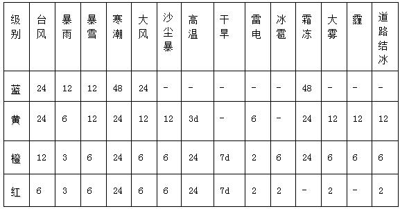
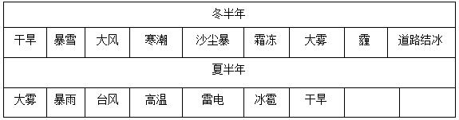

禹城地处山东省西北部，属暖温带大陆季风气候，四季分明，干湿季节明显，光照充足。春季干旱多风沙；夏季盛行偏南风，炎热多雨；秋季天气晴爽，冷暖适中；冬季多偏北风，寒冷干燥。气象灾害天气发生频率较高，根据以往总结的规律或观测得到的可能性前兆，向社会公众和相关部门发出紧急信号和报告危险情况，以避免灾害在不知情或准备不足的情况下发生，从而最大程度的减低灾害所造成的损失。为此，气象部门向社会宣传普及气象灾害防御知识，提高公众正确识别预警信号能力非常重要。
目前，我国普及了一套比较全面的气象预警信号，它由名称、图标、标准和防御指南组成。预警种类被划分为台风、暴雨、暴雪、寒潮、大风、沙尘暴、高温、干旱、雷电、冰雹、霜冻、大雾、霾、道路结冰等14类。
1、等级分类
不同颜色的预警信号表示不同等级，一般来说有蓝、黄、橙、红四种颜色，分别对应着气象灾害可能造成的危害程度、紧急程度和发展态势为Ⅳ级（一般）、Ⅲ级（较重）、Ⅱ级（严重）、Ⅰ级（特别严重）。对于这些预警信号，可以理解为蓝色不太严重，黄色要注意，橙色有些严重，红色相当严重。每一类预警信号等级不一样，有些种类只有其中的两三种。比如沙尘暴预警信号只有橙、红两色，道路结冰预警信号有黄、橙、红三色。
14类气象预警信号也可分为两类，“戒备”信号和“警告”信号，前者传达的信息是“狼要来”，后者传达的信息是“狼来了”。当戒备信号发出时，人们要及时关注天气变化，合理安排出行。当警告信号发出时，人们应尽可能留在安全地带，减少外出，出行注意安全，并做好相关准备。
2、等级标准
表1：以暴雨预警信号为例，其分为蓝色、黄色、橙色、红色四级。
从表1可以看出，气象预警信号是由弱到强，相应要采取的防范措施也更加细致。“蓝色”属于“狼要来”的预警信号，“黄色”就是“狼来了”的预警信号。一般来说，“黄色”甚至更高级的“橙色”和“红色”信号，表示恶劣天气即将或已经影响本地，而且可能持续甚至变得更恶劣。
3、气象预警信号时效与季节
表2：预警信号预报时效

表3：预警信号与季节

从表2、表3可以看出，随着气象预警信号由弱到强，发布时效愈来愈短，尤其要特别关注夏半年暴雨、大风、雷电、冰雹四类“橙色”和“红色”预警信号，确保人身安全和财产损失。冬半年是雾霾天气高发期，气象预警信号不可忽视。因此公众要增强防灾减灾意识，有效应对恶劣天气。
4、总结
总的来说，人们看到最低一级的预警信号就要注意出行安排了。比如对于鲁北地区来说，当最低一级的暴雨“蓝色”预警信号发布时，人们应该谨慎考虑远行、郊游或者去地势低洼地区的计划，随时关注天气的变化。随着预警信号的提高，人们应作出相应的防范准备，切不可“视而不见”“听而不闻”。与此同时，人们可以查阅《气象灾害预警信号发布与传播办法》进一步了解气象预警信号及其防范措施，通过当地气象局官方网站，政府网站或者气象局发布的手机短信、电子显示屏等渠道及时查看气象预警信号。
总之，在平时，只要多关注天气并了解预警信号背后的意义，关键时刻不“轻敌”，我们的防范意识就会相应提高，气象防灾减灾的效果也会事半功倍。现在我们除了看天气预报，还关注气象预警信号，以帮助我们更好地判断天气对生活的影响。